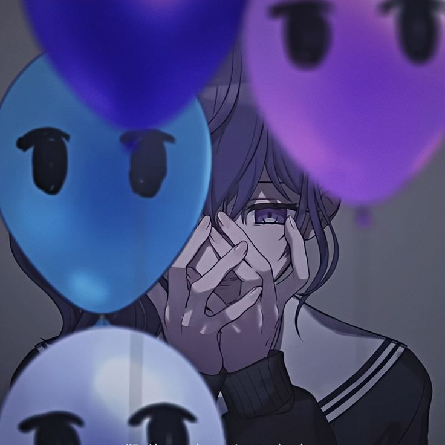

Тут починається твій довгий текст.
Завдяки налаштуванню "pre-line", кожен твій абзац, який ти почнеш з нового рядка прямо тут в HTML-коді, так само відобразиться і на сайті.
Можеш писати сюди скільки завгодно історій, логів чи крипових послань. Текст буде акуратно гортатися вниз, якщо його стане занадто багато.